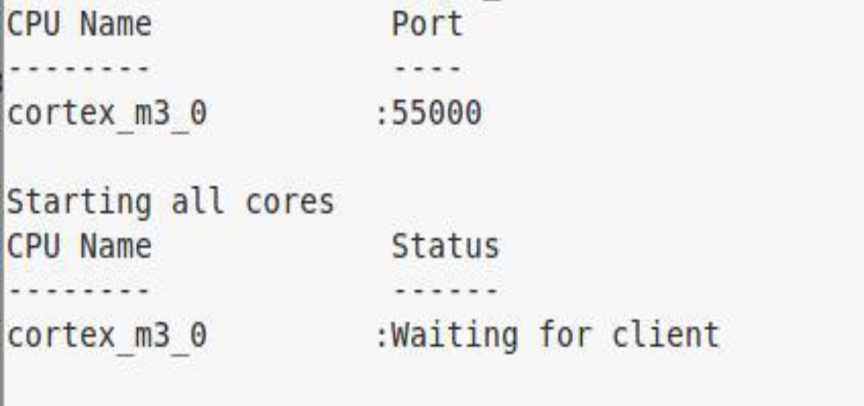

<!-- Start of markdown source -->
#Overview
XDS GDB Agent enables GDB server like functionality for stop mode debug over a XDS JTAG connection for TI devices. User can connect to a target via JTAG and then launch the XDS GDB Agent on a host PC. The XDS GDB Agent provides GDB RSP (GDB Remote Serial Protocols) interface to a GDB on a specified port (per core) and translates all the GDB debug requests to be performed over XDS JTAG connection.
[[r END OF SUPPORT NOTICE:
The XDS GDB Agent is in maintenance support mode for the MSP430 family of devices. For the ARM Cortex devices, the preferred option is to use OpenOCD Open Source Software from one of its [repositories](http://openocd.org/getting-openocd/).
<strong>As of 2020</strong> use one of the bleeding edge versions, as the current official version 0.10.0 does not feature important updates to support Connectivity MCU devices.
]]
#Software and Installation
The XDS GDB Agent is included with any install of Code Composer Studio.
For a standalone setup, you can download the XDS Debug and Emulation Software Package (EMUPack) from the [XDS Emulation Software Package downloads](emu_xds_software_package_download.html). This includes drivers for the XDS emulators and the GDB Agent.
Run the installer as Admin. Select the typical installation and default installation directory.
#Launch the XDS GDB Agent Server
The XDS GDB Agent is found in the folder where the EMUPack is installed. If EMUPack is installed in the default directory, it can be found in the folder <tt><font color="#0000f0">C:/ti/ccsv7/ccs_base/common/uscif</font></tt>
Launch the XDS GDB Agent console app:
* Open a DOS command prompt or a Linux or macOS terminal
* Type <tt><font color="#0000f0">gdb_agent_console.exe &lt;board-data-file&gt;</font></tt> from <tt><font color="#0000f0">ccsv7/ccs_base/common/uscif</font></tt> directory
* For Linux/macOS: Make sure <tt><font color="#ff0000">LD_LIBRARY_PATH</font></tt> contains the <tt><font color="#0000f0">ccsv7/ccs_base/emulation/drivers</font></tt> and <tt><font color="#0000f0">ccsv7/ccs_base/emulation/analysis/bin directories</font></tt>
* If launched successfully, the output will be seen in the console

##Launching multiple instances of the XDS GDB Agent server
If you intend to connect to multiple target devices via different JTAG debuggers, launching multiple instances of the XDS GDB Agent server is required.
However, to uniquely identify each instance the TCP port number must be changed. This is accomplished by the environment variable <tt><font color="#ff0000">GDB_AGENT_INIT_PORT</font></tt>
Therefore to be able to run a second instance of the GDB agent open a second console window and adjust the starting port with the following:
<tt><font color="#0000f0">
C:\ti\ccsv7\ccs_base\common\uscif>set GDB_AGENT_INIT_PORT=56000
C:\ti\ccsv7\ccs_base\common\uscif>gdb_agent_console.exe
</font></tt>
#Launching GDB
You need to have a GDB debugger that supports a core on the target.
- If you installed Code Composer Studio, the following GDB debuggers can be made available depending on the setup options:
- ARM: <tt><font color="#0000f0">ccsv7/tools/compiler/gcc-arm-none-eabi-6-2017-q1-update/bin/arm-none-eabi-gdb.exe</font>
- MSP430: <tt><font color="#0000f0">ccsv7/tools/compiler/msp430-gcc-6.2.1.16_win32/bin/msp430-elf-gdb.exe</font></tt>
- If you have a standalone setup, you need to install GDB separately
After setup, you can launch GDB from the command line to talk to the XDS GDB Agent
* Launch GDB
* Type GDB command <tt><font color="#0000f0">target remote localhost:&lt;port&gt;</font></tt>. The port number is the same as provided by the XDS GDB agent app or console for a given core
#Getting Board Configuration File
If you do not have a board configuration file, you can generate one from Code Composer Studio (CCS) connection setup. It is not recommended to write a board configuration file manually as it requires advanced JTAG scan chain knowledge of the target.
Check [this video](https://youtu.be/e84eSq16XO4) for details. A summary is below:
* Setup a CCS connection for the XDS and the target you are using
* Connect the XDS and target to the host PC
* Click on <i>Test Connection</i> from <i>Advanced</i> tab of the target setup view in CCS
* Check the results for success in the output view. You will also notice path/location of a <tt>&lt;testBoard.dat&gt;</tt> file in the results. You can use this file with the XDS GDB Agent
<!-- End of markdown source -->
<div id="footer"></div>